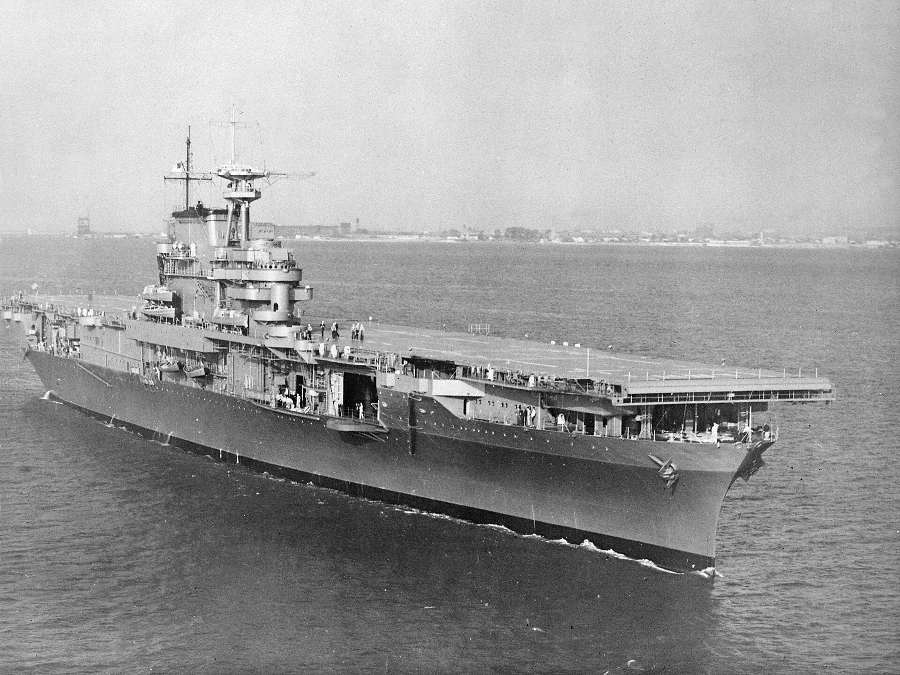
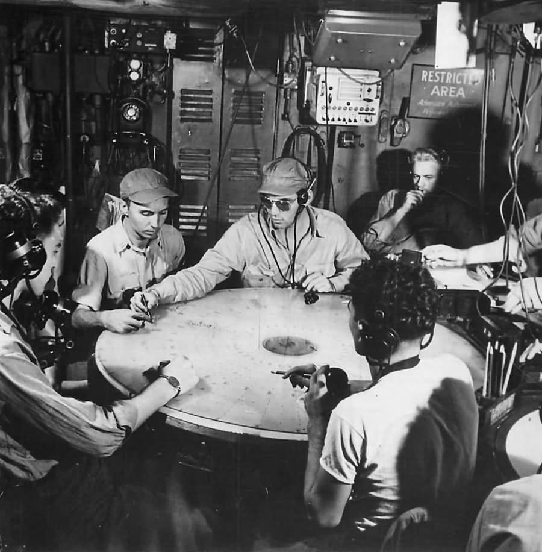
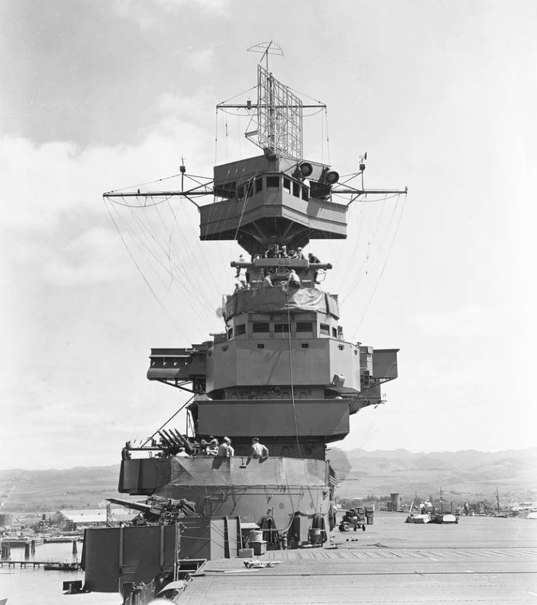
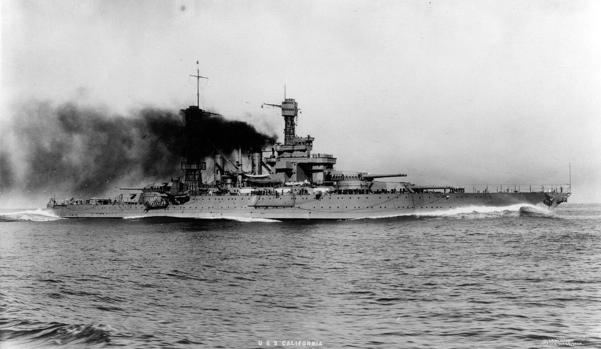
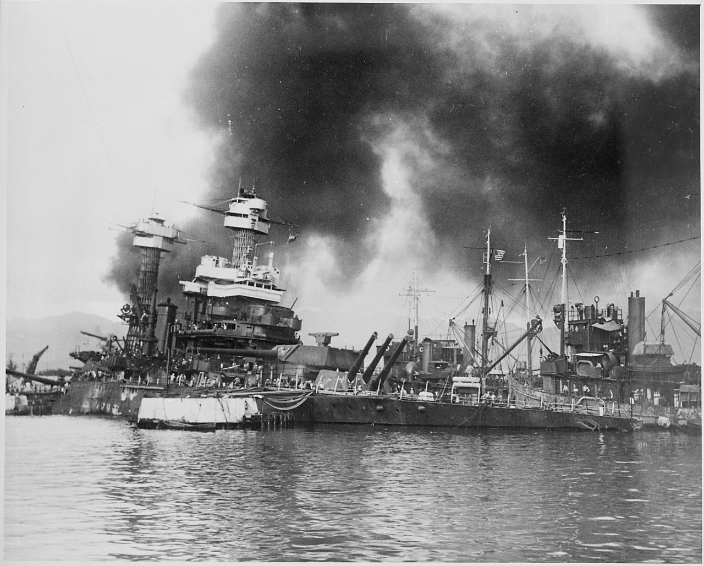
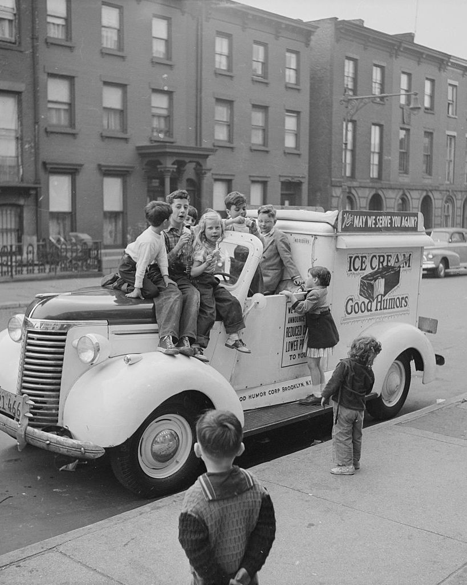

레이더 개발 이야기 (49) - 미해군의 준비
게시: 2023-10-05T06:30:54+09:00
<방의 크기가 전투력을 좌우한다> 미해군이 독자적으로 개발한 레이더 시스템 CXAM을 장착하고 장시간 운용해본 항모 USS Yorktown은 레이더의 효용성에 대해서는 매우 긍정적이면서도 '효율적인 전투기 관제를 위해서는 이를 운용하기 위한 전문적인 인원과 함께 레이더 운용을 위한 전용 공간이 있어야 한다는 리포트를 1941년 3월에 올림. 그때까지만 해도 미해군에서는 레이더라는 새로운 기술에 대해 '새로운 장난감' 정도로 생각하고 심지어 그 운용 담당자를 장교가 아닌 부사관(chief petty officer)으로 배정했을 정도. 근데 그렇게 해놓으니 도저히 운용이 안 됨. 그 부사관들이 자기가 레이더 스코프에서 본 정보, 즉 무의미한 거리와 방위각을 아무 기준을 두지 않고 닥치는 대로 마구 전화로 보내오니 함교에 있는 고위 사관들이 일을 제대로 할 수가 없었음. 누군가 그 정보들을 해도 위에 표시해가며 하나 하나를 추적해야 의미 있는 정보가 되는 것이지, 어느 순간 어느 방위각 어느 거리에 뭔가가 떴다는 정보는 아무런 도움이 되지 않았음. 그래서 함교에서 누군가 해도를 펼쳐놓고 그 작도를 하려고 하니 공간도 없고 다들 각자의 임무로 바쁜데 누가 그걸 해야 할 지도 불분명. 결국 radar plotting team이라는 것을 새로 조직해야 한다는 것이 분명해짐. 요크타운의 보고서에 근거하여 작성된 권고안에 따라 1941년 7월 미해군성에서는 당시 10월에 취역 예정으로 준비 중이던 USS Hornet (CV-8, 2만5천톤, 32노트)에 radar plot room을 만들도록 지시. 이 radar plot room(레이더 상황실)을 어디에 둘 것이냐가 고민의 대상이었는데, 요즘 군함의 CIC라면 안전한 함정 본체 안쪽에 두었겠지만, 고심 끝에 함교가 있는 갑판 구조물(island)에 두기로 함. 함교에 있는 고위 장교들과의 연락이 매우 중요했고 유사시 사람이 직접 함교까지 왔다갔다 해야 했기 때문.

(막 취역한 상태인 USS Hornet의 모습. 사각형 프레임을 갖춘 CXAM 레이더를 찾아보시기 바람. 아마 못 찾으실 거임. 이유는 아래에 나옴.) 이 레이더 상황실에는 물론 레이더 스코프 및 그 조작병들이 위치했고 유선 전화는 물론 전투기들과 직접 통신하기 위한 무선통신 장비들도 갖춰짐. 그리고 무엇보다 비교적 넓은 공간을 확보하여 넉넉한 작업공간에서 해도에 시시각각 변화하는 적기와 아군기의 위치를 표시하도록 함. 효울적인 방공 관제를 위해서는 여러 작도병들이 재빨리 그리고 정확하게 상황 표시를 해야 하는데 그러려면 방이 넓어야 했기 떄문. 그리고 상황판도 벽에 걸어 각 편대의 상세 정보, 그러니까 지휘관이 누구인데 이 편대는 언제 이륙했고 언제까지 날 수 있는 연료가 있는지 등을 기록하도록 함. 실제 경험에 기초하여 이 상황실의 조명은 절반 정도로 조도를 낮춘 전열등을 갖추도록 하기도 함. 너무 밝으면 레이더 스코프를 보기가 어려웠고, 너무 어두우면 종이 위에 작성되는 상황도를 보기가 어려웠기 때문. 이렇게 레이더 상황실을 만들다 보니 이 레이더 상황실이 적어도 함대 방공 측면에서는 함장이 있는 함교를 젖히고 사실상 두뇌에 해당한다는 것이 드러나게 됨. 이 방에는 레이더 관제 장교와 함께 함재기 관제 장교(Fighter Director Officer)가 배정됨.

(이건 호넷이 아니라 더 뒤에 건조된 어느 Essex-class 항공모함의 radar plot room의 1944년 모습.) 그런데 웃기는 부분은... 이렇게 레이더 상황실을 만들어 놓은 호넷에는 정작 레이더가 설치되지 않음. 미국은 아직 WW2에 참전하지 않아 전시 체제가 아니었고 군수품 생산이 아직 본격화되지도 않았기 때문. 호넷에 CXAM radar가 설치된 것은 다음 해 미드웨이 해전 이후인 1942년 6월이었고, 그나마 1941년 12월 진주만 습격에서 피격되어 항구 바닥에 착저한 USS California (BB-44, 3만3천톤, 21노트)에서 떼어낸 것을 달았음.

(이건 USS Enterprise에 장착된 CXAM 레이더의 모습. 어차피 호넷이나 엔터프라이즈나 모두 Yorktown-class이므로 호넷도 비슷한 모습이었을 것.)

(USS California. 1919년 진수된 낡은 테네시급 전함 캘리포니아의 1921년 모습. 이때는 당연히 CXAM 레이더를 달고 있지 않으며, 그래서 함교 앞이 깔끔하게 비어있음.)

(USS California는 USS Midway와 함께 시험용 CXAM 레이더를 달았던 몇 안 되는 군함이었음. 사진 속 모습처럼 진주만 바닥에 주저앉아 사실상 침몰했던 캘리포니아는 나중에 건져내어 수리한 뒤 태평양 전선에서 싸웠고, 레이테 만 해전에도 참전. 자세히 보면 위의 1921년 사진과는 달리 함교 앞에 사각형 프레임의 CXAM 레이더가 보임.) <아이스크림을 왜 트럭으로 팔아?!> 영국 로열 네이비가 그야말로 전쟁 중에 맨땅에 헤딩하는 식으로 레이더를 이용한 방공관제를 발전시켜 나가는 와중에 그 모습을 옆에서 면밀히 관찰하며 공짜로 배우는 존재가 있었음. 바로 미해군.

(1940년 HMS Ark Royal의 신호장교인 Charles Coke 중령이 사진 속 나무판자인 Bigsworth board 하나를 손에 들고 좁은 무전실에서 전투기들을 지휘하느라 애를 먹었던 이야기는 아래 URL에서 복습하시길. https://nasica1.tistory.com/646 )
덕분에 미해군은 레이더만 갖춘다고 다가 아니라 레이더를 이용한 함재기 관제사를 전문적으로 키워내야 한다는 것을 일찌감치 깨달음. 그래서 1941년 10월 1일 샌디에고 해군기지에 Fighter Director Control 학교를 열고 수십 명의 신규 임관 소위들을 입교 시킴. 문제는 교관. 미해군에는 아직 Fighter Director Control (FDO)이라는 개념조차 존재하지 않았는데 누가 어떻게 이들을 가르치나? 그런데 있었음. 바로 John H. “Jack” Griffin 소령 (Lieutenant Commander). 콜 사인 '잭'이 붙은 것을 보면 알 수 있듯이 그리핀 소령은 조종사 출신. 조종사 출신이라고 레이더를 이용한 함재기 관제에 대해 뭘 아나? 그리핀 소령은 보통 조종사가 아니라 영국에 파견되어 군사 옵저버 자격으로 영국 공군 및 해군의 전쟁 수행 상황을 직접 보고 듣고 체험한 사람. 영국 해군 항모에서 직접 이착함도 해봤을 뿐만 아니라, 영국 해군 최초의 함재기 관제사라고 할 수 있는 Charles Coke 중령이 요빌튼(Yeovilton)에 세운 Fighter Direction 학교에서 훈련까지 받은 장교. 그러나 불행히도 미해군도 영국 해군 못지 않게 교육 훈련에는 큰 돈을 들이고 싶어하지 않아 그리핀 소령에게 주어졌던 것은 그냥 샌디에고 해군 기지 내의 텅 빈 격납고 하나뿐. 그리핀 소령은 일단 교육생으로 입교한 25명의 소위들을 모아놓고 '귀관들의 첫 임무는 이 기지 내의 친구들과 지인들을 최대한 활용하여 구걸하든 빌리든 훔치든 필요한 비품을 뭐든 닥치는 대로 가져오는 것'이라고 선언. 이들은 레이더 장비는 당연히 구하지 못했고, 조금씩 모아오는 각종 매뉴얼을 탐독하는 것부터 시작. 당시로서는 기술 및 경험 측면에서 선배였던 영국 해군 항공대의 무선 통신 어휘집부터 시작하여 CXAM 레이더 매뉴얼, 전투기 전술 개요서, 그리고 아군 주요 기종들의 각종 성능 수치도 외우게 함. 가령 2km 고도를 날고 있는 아군기로 3km 상공의 적기를 요격하기 위해서는 아군기의 초당 상승 능력을 알아야 했기 때문. 어느 정도 자재가 모이자 그리핀 소령은 격납고 바닥에 과녁처럼 일정한 간격으로 동심원 10개를 그리고 그 위에서 전투기를 지휘하는 실습을 시킴. 바로 자신이 졸업한 영국 요빌튼 전투기 관제 학교의 수업 방식을 그대로 재현하려 한 것. 즉, 헤드폰을 쓴 채 얼굴에 가림막을 달아 바로 코 앞만 볼 수 있게 한 학생들을 세발 자전거에 태워 전투기 흉내를 내게 하고, 레이더 관제사 역할을 맡은 학생들이 그들을 전화로 조종하여 요격 위치로 유도시킨 것.

(바로 이 모습. 자세한 이야기는 전에 썼던 https://nasica1.tistory.com/648 참조)
그런데 그러자면 어른들이 탈 만한 크기의 세발 자전거가 필요. 영국의 스승인 코크 중령이 아이스크림 판매상들이 이용하던 세발 자전거를 이용했으므로, 그리핀 소령도 똑같이 하려 했음. 그러나 당시 미국은 영국보다 공업력과 경제력이 좋은 나라라서, 샌디에고 일대의 아이스크림 판매원은 자전거를 타고 동네를 돌아다니지 않고 트럭을 몰고 다녔음.

생각치 못한 장벼게 부딪힌 그리핀 소령은 어쩔 수 없이 가장 큰 사이즈의 아동용 세발 자전거를 구매하여 안장 높이와 핸들 길이만 파이프로 연장시킨 뒤 학생들에게 타게 함. 그나마 무전기도 구하지 못해 처음에는 자전거를 탄 조종사(?)들에게 유선 헤드폰을 쓰게 했는데, 자전거를 좀 타다 보면 전화선끼리 엉켜 난리가 아니었다고. 결국 자전거에 붙일 무전통신기를 구한 뒤에야 다시 훈련 시작.